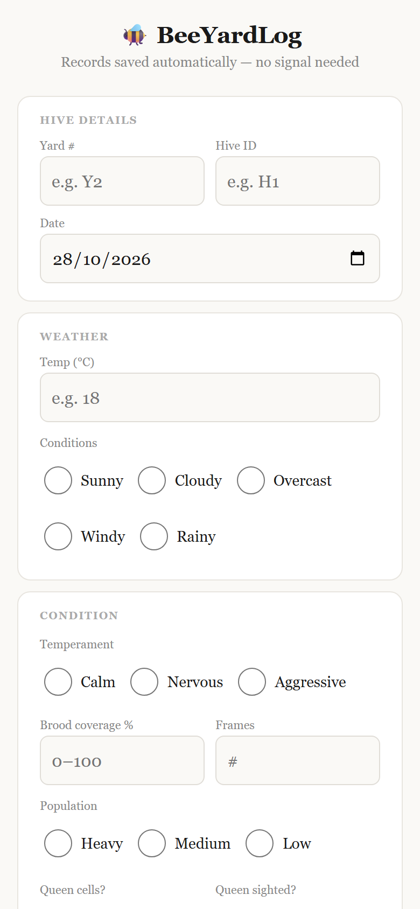
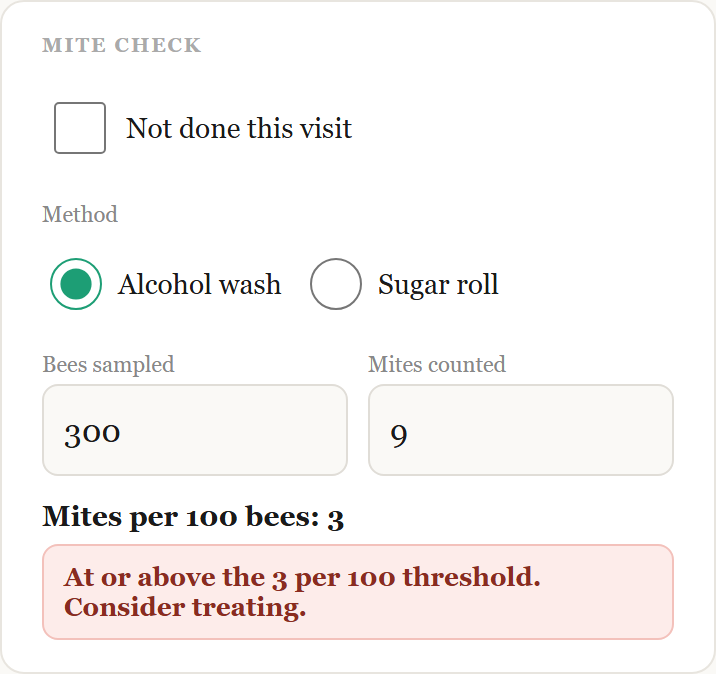
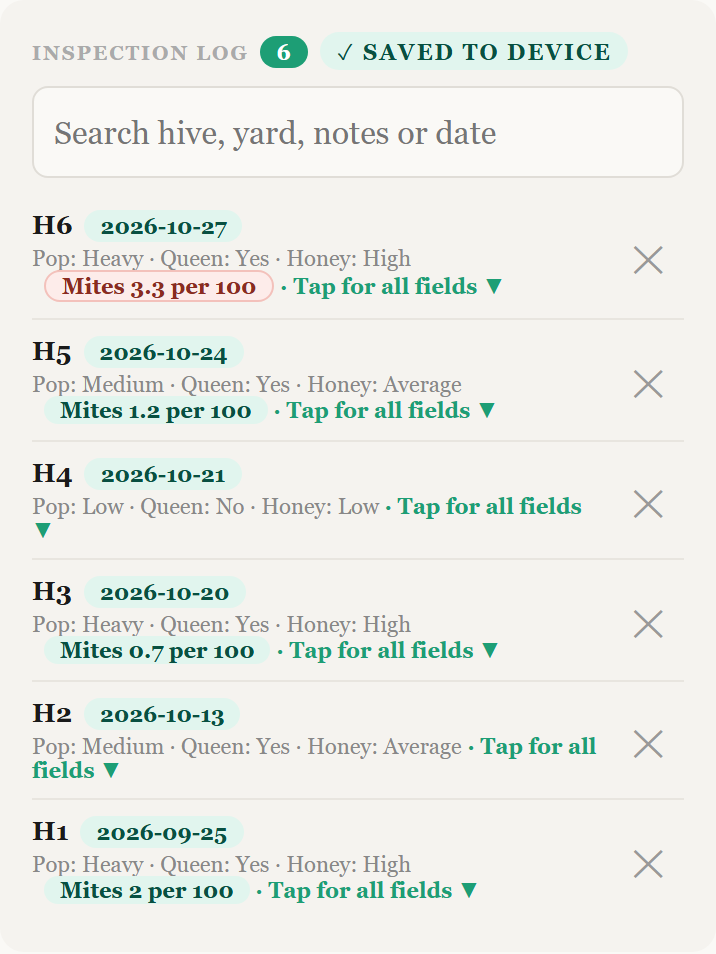

Work
What I've built and shipped, newest first.
BeeYardLog
Solo project, 2026 Live, in field use
A free, offline hive inspection logbook, built because I kept running out of signal and wrestling with messy paper notes. It works with no signal and no account, and the records stay on the phone.
- Mite check, draft saving, search, and Excel and backup export.
- Tested on real iPhones and Android phones, including use in airplane mode.
- 179 unit and 99 end-to-end tests, run on every push in CI.



PolicyCheck
10-week client placement, 2026 Completed
Shipped features and dark mode in a production React/TypeScript codebase for an AI-native insurance broker.
- Bug fixing and performance auditing, measured before and after.
- Part of the team that shipped dark mode; I built two CI checks that stop pull requests from breaking it and took on its contrast fixes.
- Grew the client test suite from 314 to 753 tests.
Private company repo.
Bootcamp team projects
Mission Ready, 2026 Completed
- TradeMe Showcase: a full-stack marketplace app built as a team. I built the Category page and Watchlist feature, led the proof of concept and README, and refactored the backend into a clean MVC structure. Later I added 48 unit and component tests for the Watchlist, Category, Compare and Bid screens, which found and fixed real bugs.
- Turners Cars insurance chatbot: an AI-powered assistant (Google Gemini) that recommends a policy and emails a summary. Each team member built their own version; I built the chat popup UI and styling. I also wrote 22 Vitest tests (20 frontend and 2 backend) covering policy recommendations, email validation, conversation history and the summary endpoint.